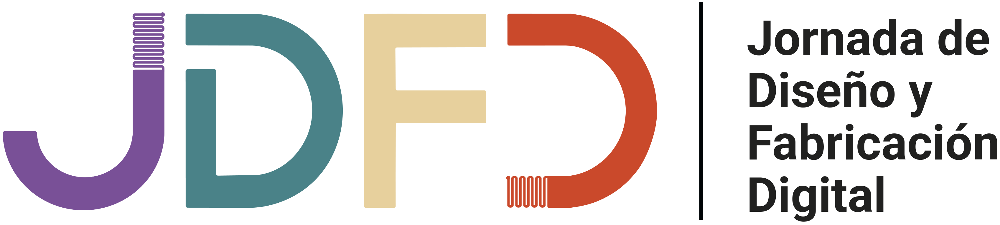
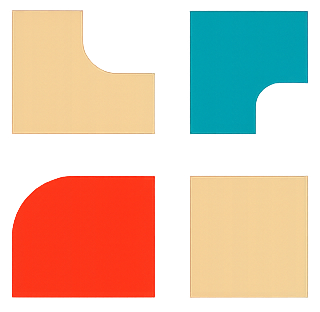

Jueves 27 de Agosto de 2026 - UNLa - Buenos Aires, Argentina
Falta cada vez menos
JDFD 2026
00
Días
00
Horas
00
Minutos
00
Segundos
¡La JDFD 2026 ya comenzó!
Jueves 27 de agosto de 2026 — Polo Tecnológico > UNLa
1ERA JORNADA DE DISEÑO Y FABRICACIÓN DIGITAL
Diseñar haciendo, fabricar transformando
La 1ª Jornada de Diseño y Fabricación Digital en el LAD (JDFD 2026) es un espacio de encuentro, reflexión e intercambio colectivo acerca de las transformaciones en la gestión del diseño y de la innovación en la actual era de digitalización creciente de los procesos productivos, con el objetivo de promover la innovación y el desarrollo de proyectos que integren diseño y tecnología.
Esta primera edición, organizada por el Laboratorio de Diseño (LAD) junto con la Especialización en Tecnologías de Fabricación Digital del Departamento de Humanidades y Artes de la Universidad Nacional de Lanús (UNLa), se llevará a cabo el día jueves 27 de agosto de 2026 en el Polo Tecnológico de la universidad (Predio Yrigoyen), en Lanús, Buenos Aires, Argentina.
Bajo el propósito de reunir a los actores de la innovación en fabricación digital aplicada al campo del diseño y de otras ciencias, la jornada invita a investigadores, docentes universitarios y de escuelas técnicas, profesionales de la industria y estudiantes de grado y posgrado a promover la divulgación de experiencias, investigación y desarrollo. En el encuentro se combinarán charlas virtuales matutinas, espacios de talleres y muestras, y conferencias presenciales vespertinas, con el objetivo de promover un ecosistema de fabricación digital en Argentina.
CONVOCATORIA: MODALIDADES DE PARTICIPACIÓN

COMUNICACIÓN BREVE
Hasta 1000 palabras y 20 imágenes. Se publicará en libro de Actas de la Jornada en 2027 con ISBN propio.
Ir al Formulario
Descargar condiciones

ARTÍCULO
Artículo completo con máximo 4000 palabras y 10 imágenes. Se publicará en libro de Actas de la Jornada en 2027 con ISBN propio.
Ir al Formulario
Descargar condiciones

EXPERIENCIA EN VIVO
Podrás compartir tu experiencia en tiempo real durante el evento. Duración 20 minutos.
Ir al Formulario
Descargar condiciones

MICROTALLER
Taller interactivo de participación mediante inscripción previa y cupos limitados. Duración 40 minutos en total.
Ir al Formulario
Descargar condiciones

ASISTENTE
Participación del evento como asistente. La participación es gratuita y con certificación de asistencia
Ir al Formulario
Descargar Certificado
Programa del evento
Jueves 27 de agosto de 2026
Jornada de Diseño y Fabricación Digital
UNLa · Polo Tecnológico
Inicio de la jornada
Apertura de la Jornada y presentación de las Autoridades y los organizadores
DHyA ( Departamento de Humanidades y Artes ) · ETFD (Especialización en Tecnologias de Fabricación Digital) · LAD ( Laboratorio de Diseño ) · Escuela de Oficios Felipe Vallese · Dirección de Cultura y Educación de la Provincia de Bs As
Mesas matutinas
Mesa 1 · Sala 2
Formación profesional en tecnologías digitales
Modera: Guillermo Andrade
- Guillermo Andrade
- Ricardo de Gissi
- Daniel Bozani
Mesa 2 · Sala 2
Modera: Estefanía Fondevila Sancet
- Gemelos digitales y su aplicación en la industria · Federico Walas (UNAJ – UNLP)
- Asiento pediátrico · Luis Pérez y José Juan de León (Vitalitecs)
- Programa Laboratorios de Innovación Abierta · Silvia Díaz y Joaquín Vega Mandracho (UTEC, Uruguay)
- Máscaras de protección deportivas · Matías Bordese (UNVM)
- Asiento ergonómico impreso · José Juan de León y Luís Pérez (Vitaltecs)
Mesa 4 · Salón
Modera: Diego Velazco
- Con qué datos fabricamos · Pablo Caffaro (UNLa)
- JUANDELBEATS: Joyería de autor en era digital · Juan Manuel García del Val
- Impresión 3D para industria: asistencia a la producción y manejo de lead times · Manuel Barci
- De maker a empresa: 10 años fabricando en 3D para la industria · Bernardo Rimoldi y Francisco Lapido (Sólidos 3D)
- Impresión 3D en entornos industriales y producción en serie · Ricardo Naveira
Mesa 3 · Sala 2
Modera: Andrés Ruscitti
- Laboratorium · Juan Pablo Ferlat
- Biofabricación: “cuero de hongo” · Rodrigo Mene y Adriana Pezzutti (UPSO – UNS)
- Morfología y diseño generativo en Grasshopper · Patricio Rabus (UNLa)
- Diseño educativo con IA generativa · Liliana Fray Rodríguez (UNLa – UNL)
- El diseño en la palma de tu mano - Red Digital de Diseño Autoral y Manufactura Distribuida del Conurbano · Cristian Ullman
Mesa 5 · Salón
Modera: Diego Velazco
- Desarrollo de camisa para impresoras abiertas para regulación de temperatura · Juan José Capiello (ETFD UNLa)
- Tipotropia · Mailen Felice (ETFD UNLa)
- LAMBEE: Analizador químico de bajo costo · Fabían Leguizamón, Roberto Busnelli, Matías Aguirre y Leonardo Piccinini (FABLAB UNSAM)
- Prototipado rápido de PCBs con láser CO₂ · Matías Aguirre, Roberto Busnelli y Fabían Leguizamón (UNSAM)
- Lámpara no planar · Sofía Nilsson(ETFD UNLa)
Actividades
especiales
Visita guiada para escuelas técnicas y ATM (Aula Tecnológica Móvil)
Taller de remeras y sellos
(espacio LAD)Impresión 3D en cerámica
(Taller Escuela Vallese)
Mesas vespertinas
Mesa V1 · Sala 2
Modera: Diego Velazco
- Robot filtrante de aire · Nicolás Hermann (UNLZ)
- Manufactura aditiva metálica como herramienta de diversificación e innovación industrial argentina · Germán Kuglien y Matías Tellinger (CONUAR)
- ARCA RUCA: un sistema modular de prototipado arquitectónico físico-digital · Luis Coliqueo, Lucio Angel y Lola Coliqueo (RUCA)
- El diseño industrial como motor de una PyME: fabricación digital en instrumentos técnicos de precisión · Alejandro Llopis y Noelia Navarro (MAMBA)
Mesa V2 · Sala 2
Modera: Andres Rusccitti
- Impresión 3D en Salud · Valeria Salarols (UNLP)
- Digitalización multimodal del patrimonio · Mercedes Morita, Daniel Loiaza Caravajal, Gabriel Bilmes y Andrea Zingarelli(CIOP UNLP)
- Ingeniería inversa de procesos. Se busca problema para esta solución · Jorge Petrosino (UNLa)
- Impresión 3D de pastas biobasadas · Cecilia Dorado, Mariano Ostoich y Rodrigo Ramirez (INTI)
- Moldes impresos en 3D para experimentación con biomateriales · Mariano Ostoich, Cecilia Dorado y Rodrigo Ramirez (INTI)
Mesa V3 · Sala 2
Modera: Estefanía Fondevila Sancet
- Exportación modular de servicios de diseño · Ignacio Rost e Ivo Ferreira (Trhelix - UNLa)
- Tiny Duino: kit para la enseñanza de robótica educativa basado en Arduino · Martín Weimer (ETFD UNLa)
- Experiencia Portaminas · Pablo López, Guillermo Dini y Federico Enríquez (UNLa)
- Exportar diseño, reconstruir capacidades · Mariano Pauluk (UNQ - UNLa)
Mapeo de Red Federal de Laboratorios de Diseño
Estefanía Fondevila Sancet (UNLa)
Especialización en Tecnologias de Fabricación Digital
Andrés Ruscitti
Panorama de la Fabricación Digital
Rodrigo Ramírez (INTI)